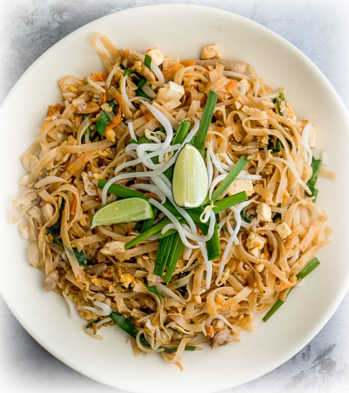

Better than takeout? In only 10 minutes?
Say good-bye to takeout when you can make it better, more flavorful, and faster at home. Cook restaurant-style, chicken Pad Thai at home in just 10 minutes! It's sweet, savoury, sour, spicy and nutty, and will stimulate all of your senses.
- Fish Sauce (2 Tbsp)
- Lime Juice (2 Tbsp - or 1 Lime)
- Soy Sauce (1 Tbsp)
- Sriracha Sauce (1/2 Tbsp)
- Brown Sugar (1 Tbsp)
- Large Rice Stick Noodles or Vermicelli Noodles (8oz.)
- Vegetable Oil (2 Tbsp)
- Boneless/Skinless Chicken Thigh (Diced)
- Garlic (4 Cloves; Minced)
- 2 Large Eggs
- Firm Tofu (1/2 cup; Diced)
- Chives (1 cup; 2-inch pieces
- Bean Sprouts (2 cups)
- Chopped Peanuts (1/2 cup)
- Prepare all the ingredients! Cooking Pad Thai is a very fast process and by having your ingredients prepped and within hands reach, this will ensure that everything goes smoothly.
- Make the Sauce. Combine fish sauce, lime juice, soy sauce, sriracha, and brown sugar in a small bowl and stir to combine.
- Soak the dry noodles in water for 10 minutes until soft.
- Preheat oil in a large pan over medium high heat (about 2 minutes). Add chicken and garlic and cook for 3 minutes. Add noodles into the pan and stir continuously for 1 minute.
- Shift the noodles to one side to make some space in a pan to crack the eggs. Add the eggs and cook until they have thickened and there are no visible liquid parts remaining. Stir into the noodles and continuously mix the ingredients together for one minute.
- Add in prepared sauce and continue to stir to combine together. Turn heat down to low and add in tofu, chives and bean sprouts. Stir continuously for another minute.
- Sprinkle in chopped peanuts and serve immediately.
Recipe by Ahead of Thyme